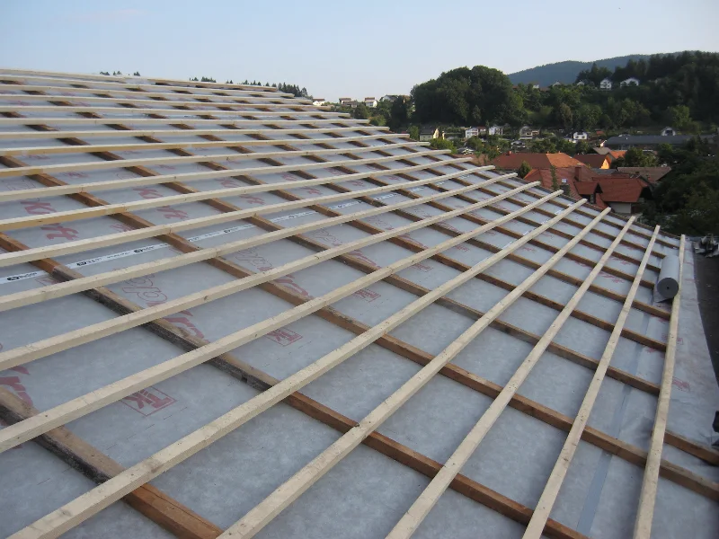
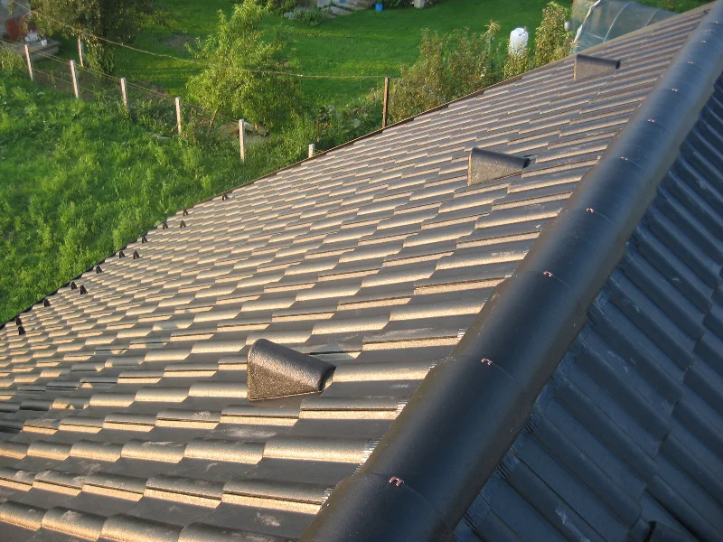
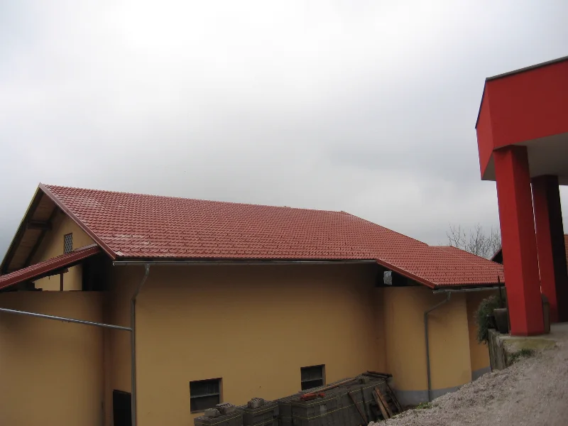
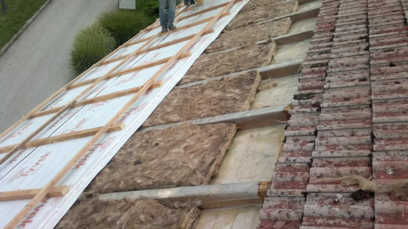
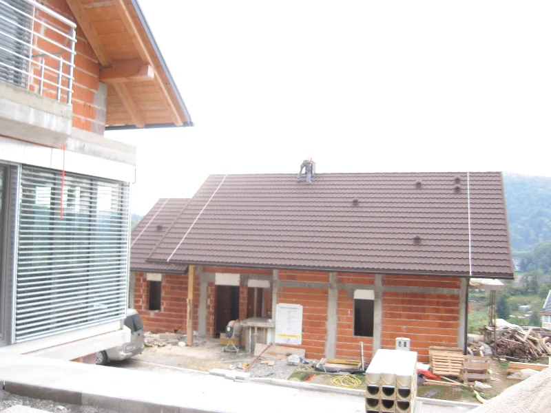
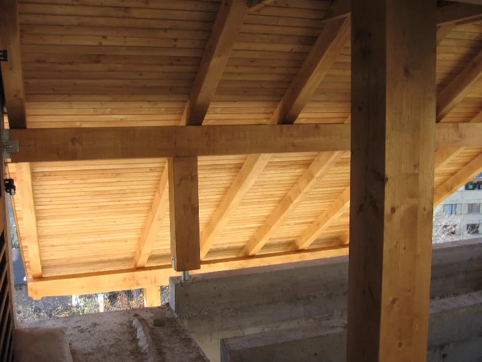
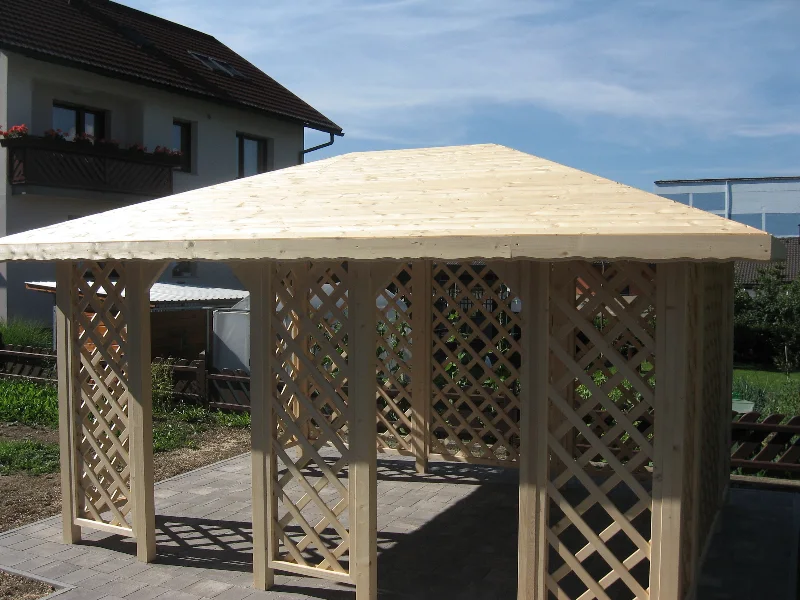

01Tesarstvo
- lesene strešne konstrukcije
- nadstreški za avtomobile in terase
- brunarice, vrtne ute, vrtni paviljoni
- izdelki iz masivnega lesa
les: smrekovina, impregnacija proti insektom in glivam, po želji lazurni premaz
Energetske prenove streh, podstreh in mansard, nove strehe in lesena ostrešja. Krovik svetuje, izvede in po navedbah na svoji strani za stranke brezplačno pripravi vlogo za nepovratna sredstva.

Pogledamo objekt, lego, naklon strehe in vremenske vplive ter svetujemo vrsto kritine in izolacije. Individualen pristop v skladu z vašimi finančnimi zmožnostmi.
Na sedežu pripravimo projekt energetske prenove in popis del, na terenu pa izvedbo.
Dokumentacija za pridobitev nepovratnih sredstev: po navedbah na njihovi strani brezplačno.
Ostrešje, izolacija, kritina in kleparski zaključki. V dogovorjenih rokih in v skladu s predpisi o varnosti pri delu.
les: smrekovina, impregnacija proti insektom in glivam, po želji lazurni premaz

kritina: opečna, betonska, jeklena, vlaknocementna, pločevinasta, bitumenska

material: pocinkana pločevina, aluminij, baker







Po lastnih navedbah izvaja projekte po vsej Sloveniji in tudi v Avstriji: Velenje, Šoštanj, Pesje, Šmartno ob Paki, Ponikva pri Žalcu, Sevnica, Ljubljana, Medvode, Maribor, Štanjel, Vransko, Škofljica, Ruden (Avstrija).
Vzorce kritin in strešnih sistemov si lahko ogledate pri nas. Pokličite in dogovorimo se za obisk.